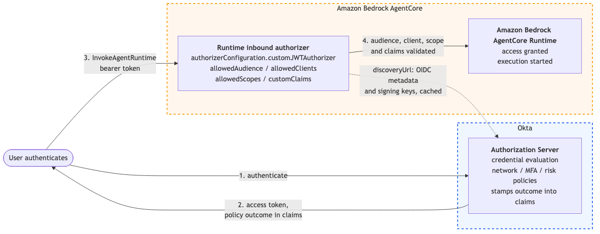
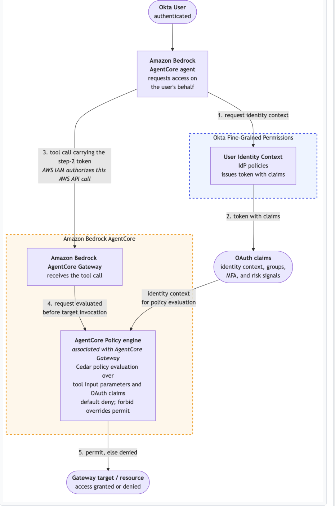
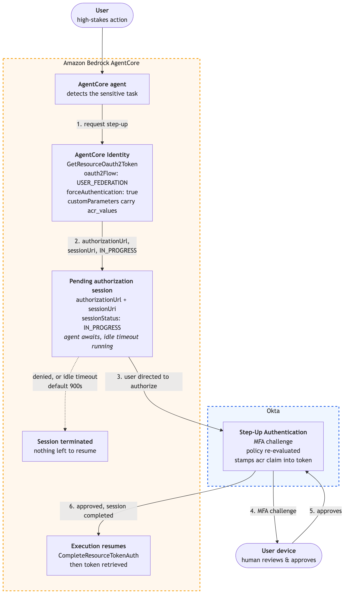

1
Use Case 1: Registering Agents
As a governance lead, I want to register and catalog every AI agent as a governed entity, so that I can prevent “shadow AI” and maintain full corporate accountability and compliance oversight for every digital worker.
Architecture Flow: Dual Registry, Identity + Runtime Governance

Okta's Role: Corporate Identity Registry
Okta registers the agent as a governed corporate identity with named human owners, a certification schedule, and a deactivation path. When a sync detects an agent has been deprovisioned, Okta blocks it from requesting OAuth tokens upon detection. Agents that fail to provision are held in a Suspended state and cannot obtain authorization grants until resolved. Okta answers who is accountable for this agent and regulates access.
AgentCore's Role: Runtime Identity Registry
AgentCore Identity gives that same agent a workload identity inside AWS, so it can prove itself to AWS services and obtain scoped outbound credentials without embedded secrets. AgentCore Identity answers how this agent authenticates and obtains credentials at runtime.
How Okta and AgentCore Work Together
Okta adds corporate ownership, certification, and lifecycle context to the agent identity. Amazon Bedrock AgentCore Identity provides the agent's runtime workload identity and scoped access to AWS resources without embedded credentials. Customers using both can connect corporate accountability with secure runtime authentication and credential access.
2
Use Case 2: Zero-Trust Inbound Agent Activation
As a system administrator, I want to restrict access to my AI Agent to only risk-verified and authenticated employees, so that the AgentCore runtime is accessed only by verified and authorized identities.
Architecture Flow: Token Validation at the Runtime Boundary

Okta's Role
Evaluates corporate credentials, network egress flags, and real-time device health to issue a secure user access token. The policy outcome, including MFA, risk level, and device state, is stamped into the token as claims, carrying the enforcement decision forward. In this pattern, Okta authenticates the employee and provides corporate identity, MFA, device, and risk context in the issued token.
AgentCore's Role
When the runtime is configured with an inbound JWT authorizer, Amazon Bedrock AgentCore intercepts each request at the runtime boundary and independently enforces those configured authorization requirements by validating the Okta-issued JWT before starting a session. AgentCore can be configured to validate attributes such as the token's audience, client, scope, expiration, and configured claims. It obtains Okta's public signing keys from the configured OIDC discovery URL, allowing the two systems to remain decoupled while coordinating identity and runtime enforcement.
How Okta and AgentCore Work Together
Okta verifies identity, MFA, and device health before issuing a token, ensuring only the right people can activate the agent. AgentCore uses that token as the condition for spinning up the runtime session, tying every compute resource to a verified identity. Okta evaluates policy at authentication; AgentCore re-enforces it at the execution boundary, the same policy outcome checked twice at two different control points. Together they ensure every agent session starts from a known, trusted state.
3
Use Case 3: Cross App Access (On-Behalf-Of a user flow)
As an agent developer, I want my AI agents to fetch data from external SaaS applications (such as Salesforce or Slack) using the authority of a human user, so that the agent operates within user's allowed permissions.
Cross App Access Flow

Okta's Role
Acts as the Authorization Server for the first leg of the XAA flow, issuing a short-lived delegation credential that asserts the agent is authorized to act on the user's behalf. This credential cryptographically binds the two identities together, allowing the agent to cross application boundaries without exposing primary user tokens. Because the XAA grant is admin-configured at the org level, end users never see a consent screen; the agent operates silently on their behalf.
AgentCore's Role
Routes the request to the AWS Lambda Interceptor, which runs both legs of the XAA flow: redeeming Okta's delegation credential at the resource app's own authorization server to obtain a scoped access token, then injecting it directly into outbound headers. The token is held in Lambda memory, scoped to the handler, and does not persist across container reuse.
How Okta and AgentCore Work Together
Okta mints a token that cryptographically binds the human user and agent together. AgentCore routes that token into outbound requests, eliminating redundant exchanges. Okta handles the first leg, issuing a delegation credential; AgentCore's Lambda interceptor redeems it at the resource app's own auth server to get the final access token. Together they enable scoped, user-bound access across application boundaries with no stored credentials.
📝 Implementation pattern: For cross-app access involving Okta and a resource application's authorization server, customers can configure an AWS Lambda interceptor on AgentCore Gateway to coordinate the two token exchanges and attach a scoped access token to the outbound tool call. This pattern combines Okta's delegated identity context with AgentCore Gateway's request interception and routing capabilities without storing primary user credentials.
4
Use Case 4: Layered Authorization: Identity to Execution
As a compliance manager, I want Okta's fine-grained permissions to evaluate identity context and emit it as claims, and the AgentCore Policy engine associated with Amazon Bedrock AgentCore Gateway to evaluate those claims together with tool parameters, so that each check is separately audited and access is evaluated end-to-end from identity to execution.
Architecture Flow: Okta Identity Context Evaluated by AgentCore Policy at AgentCore Gateway

Okta's Role
Okta's fine-grained permissions evaluate the user's identity relationship and security policies, then emit the outcome as claims in the access token. These claims, including identity context, MFA, and risk signals, are the identity context that AgentCore Policy evaluates downstream. Okta writes its own permit or deny decision to its own audit log.
AgentCore's Role
When a policy engine is associated with the gateway, Amazon Bedrock AgentCore Gateway receives each MCP tool call and the associated AgentCore Policy engine evaluates it before the target is invoked. Configured this way, AgentCore Policy uses Cedar policies to evaluate both tool-call parameters and the claims Okta emitted, so identity context flows directly into the execution decision. AgentCore Policy uses default-deny semantics, so a call that does not satisfy a policy is blocked before reaching the target. AWS IAM and AgentCore Policy remain distinct control layers operating on different principals: IAM authorizes the AWS API call that delivers the tool call, while AgentCore Policy authorizes the tool call itself, down to individual input parameters. Each layer evaluates independently. With traces enabled on the Gateway, AgentCore Policy writes a per-tool-call permit or deny decision to CloudWatch — including the authorization reason and determining policies — giving each layer a queryable audit record with the deciding policy attached.
How Okta and AgentCore Work Together
Okta determines what identity context is expressible; AgentCore Policy determines what tool calls that context permits. Each layer writes to its own audit log, but the decision is sequential: Okta's claims are an input to AgentCore Policy evaluation. Each control evaluates its configured policy before the action proceeds. Together, they coordinate corporate identity context with tool-level execution controls and provide an audit record at each layer.
5
Use Case 5: Human in the Loop
As a security administrator, I want to ensure that high-stakes operations, such as large financial transfers or critical database changes, are paused until an explicit human approval is provided, so that no sensitive action completes without verified intent.
Architecture Flow: Pause, Verify, Resume

Okta's Role
Re-challenges the designated approver with MFA, for example an Okta Verify push, before the agent takes any action, ensuring a human, not the agent, makes the final call on sensitive requests. Okta stamps the step-up outcome into the token as an
amr claim (Okta-specific values: okta_verify, swk for Verify push), giving AgentCore verifiable proof of the authentication method, not just that a token was issued.AgentCore's Role
Configured for this pattern, Amazon Bedrock AgentCore provides the runtime interception point: the agent can request step-up for a specified user identity before a sensitive operation and hold a pending authorization session until the tool runs. Once the human completes the Okta step-up challenge, AgentCore can be configured to require the step-up claim,
acr or amr, in the returned token before the session proceeds. If the human does not respond within the configured session timeout, the session terminates automatically.How Okta and AgentCore Work Together
Configured for this pattern, AgentCore provides the runtime interception point and holds the pending authorization session before any tool runs. Okta re-challenges the human with MFA and stamps the step-up level as an acr claim in the token. Together they ensure no high-stakes action completes without verified, acr-backed human confirmation.